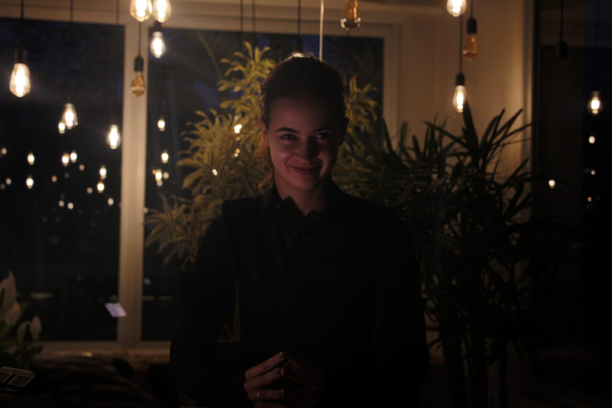

Herança de Sangue - Continuísta

Atuei no média-metragem Herança de Sangue como continuísta. Foi um desafio muito grande por conta de tantas diárias de gravações e pela mudança temporal, considerando que se passava nos anos 70. Este foi um trabalho de final do primeiro semestre do curso de Cinema e Audiovisual.
Tortura - Continuísta e atriz
Neste curta-metragem além de contunuísta, também atuei como a personagem "Fernanda Léger". Foi a primeira vez na atuação e na continuidade então foi um momento de baque inicial de entender as funções.
Solidão na Grande São Paulo

Solidão na Grande São Paulo é uma videoarte que fiz para expressar o sentimento de solidão que senti ao mudar para a cidade, foi gravado e editado por mim.